Аерокосмічний титан.
Найлегший і найміцніший корпус в історії лінійки Pro.
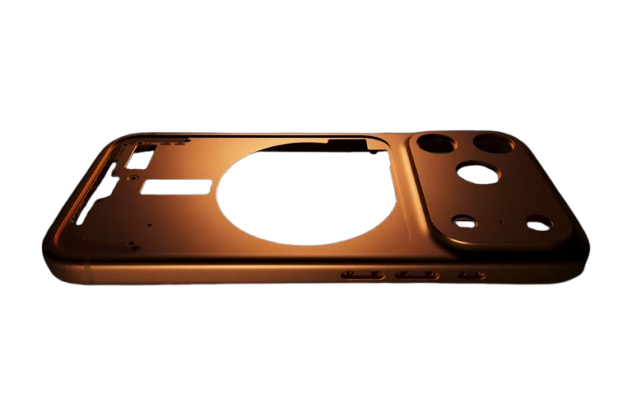
Титан. Неймовірна потужність. Абсолютний Pro.
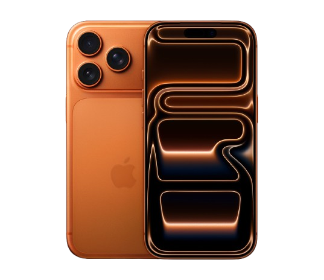
Найлегший і найміцніший корпус в історії лінійки Pro.

Деталізація, яка вражає.
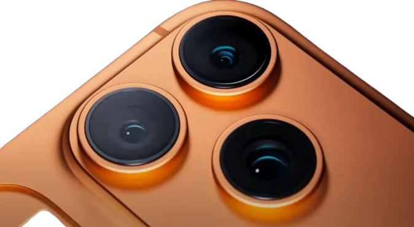
Геймінг нового рівня.
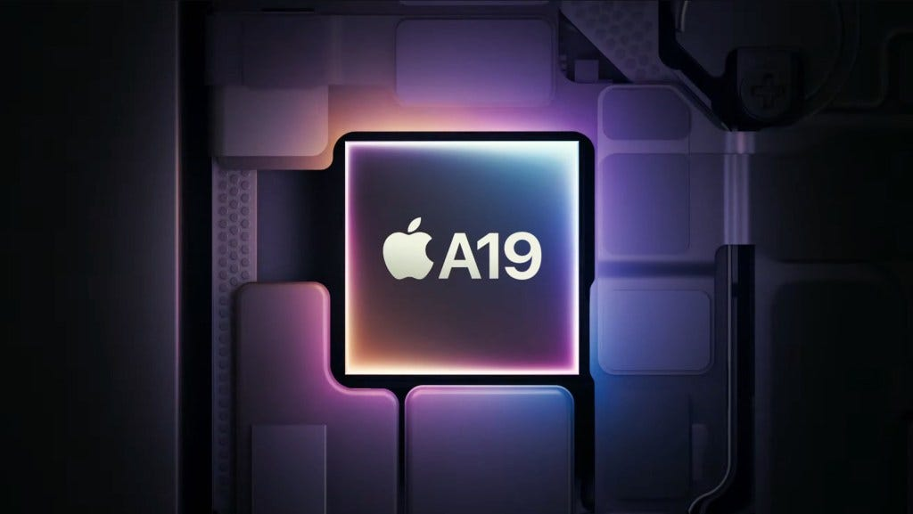
Весь день без підзарядки.
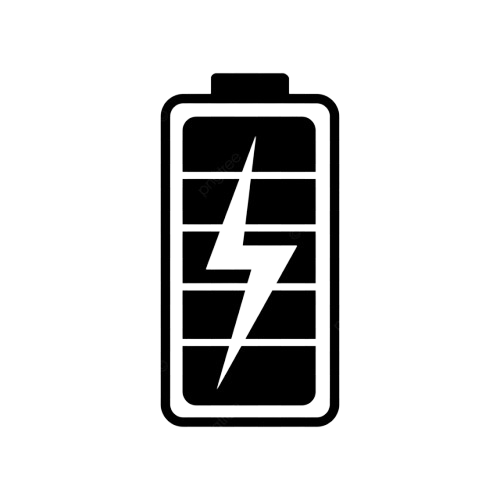
iPhone 17 Pro має міцний і легкий корпус з аерокосмічного титану. Це той самий сплав, що використовується в космічних апаратах для польотів на Марс. Внутрішня рама з 100% переробленого алюмінію покращує відведення тепла.
Новий сенсор розкриває безпрецедентний рівень деталізації. Ваші портрети та пейзажі виглядатимуть як ніколи професійно завдяки технології Photonic Engine нового покоління.
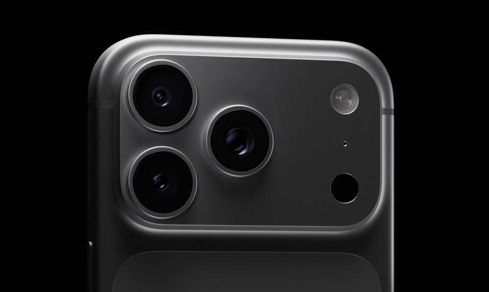
Найбільший редизайн в історії графічних процесорів Apple. Апаратне прискорення трасування променів забезпечує неймовірно реалістичне освітлення у ваших улюблених іграх на рівні консолей.
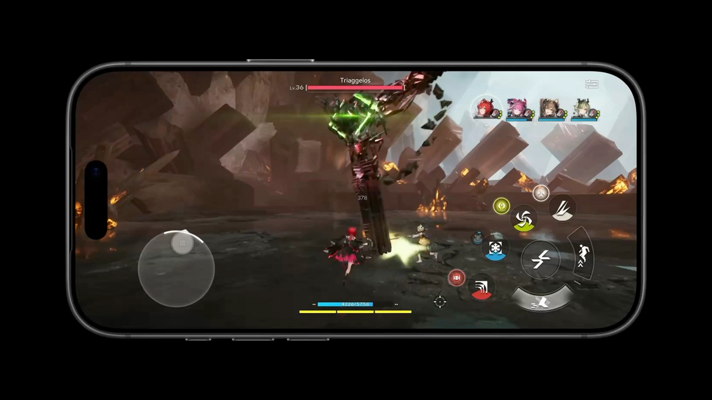
Зустрічайте відтінки титану, розроблені за допомогою унікального процесу прецизійного PVD-покриття.
Натуральний
Синій
Білий
Чорний
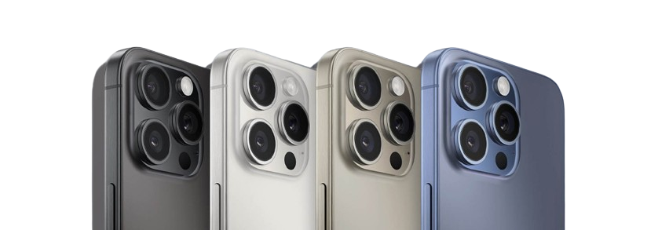
iPhone 17 Pro містить більше перероблених матеріалів, ніж будь-коли. Ми використовуємо 100% перероблений алюміній у внутрішній рамі та 100% перероблений кобальт у батареї. Наше пакування більше не містить пластику.
Наведи курсор на острів. Сповіщення, музика та таймери з'являються саме тоді, коли вони потрібні, не відриваючи тебе від справ.
Дисплей із технологією ProMotion і частотою оновлення до 120 Гц забезпечує неймовірно плавний скролінг. А передня панель Ceramic Shield надійніша за будь-яке скло смартфона.
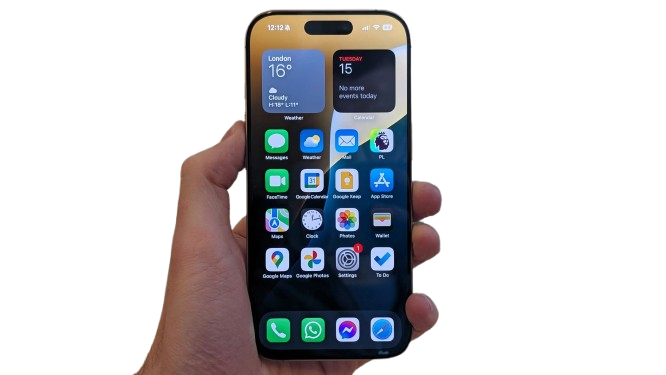
iPhone 17 Pro підтримує USB 3 для блискавичної передачі даних і швидкої зарядки. Професійні відео фотографи можуть передавати важкі файли у форматі ProRes за лічені секунди.

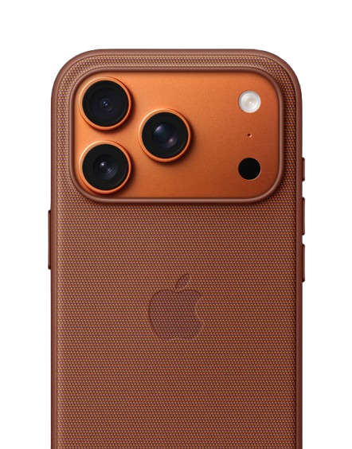
Чохол із тканини FineWoven. Виготовлений зі спеціальної міцної тканини... Доступний у п'яти кольорах.
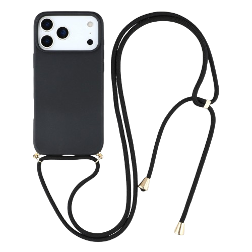
Ремінець через плече Із ним зручно носити iPhone, не тримаючи його в руках. Ідеальна посадка.
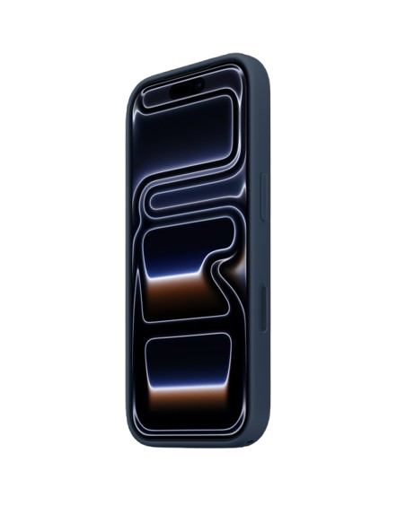
Силіконовий чохол. Шість неймовірних кольорів — тепер із двома точками кріплення.